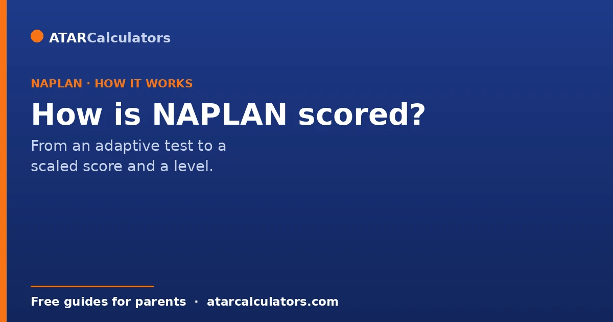
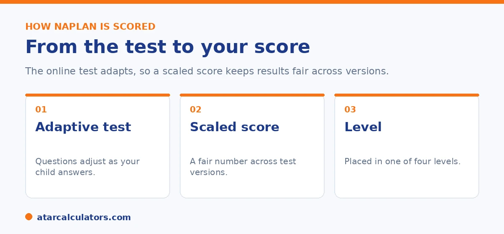

Here is how NAPLAN scoring works. The online test is adaptive, so the questions change based on how your child answers. Because children answer different questions, each result is turned into a scaled score that allows fair comparison. The scaled score then places your child in one of four levels. This guide explains each step in plain English.
NAPLAN scoring can sound complicated. Words like adaptive and scaled score are not always explained well. The idea behind them is actually simple, and worth understanding.
In short, the test adjusts to your child, then turns their result into a fair number. That number decides their level. You can see what any scaled score means in our NAPLAN score calculator.
Key takeaways
- The online NAPLAN test is adaptive. Questions change as your child answers.
- Because children answer different questions, results become a scaled score for fairness.
- A child who reaches harder questions can earn a higher score.
- The scaled score then sets the proficiency level.
- Scaled scores let you compare results from 2023 onwards.
- Year 3 writing is the one part still done on paper.
Step one: the adaptive test
Most of NAPLAN is done online. The online test is adaptive, which means it changes as your child answers. If your child answers correctly, the next questions can get harder. If they struggle, the next questions can get easier.

This means two children in the same class can see different questions. That is by design. It helps the test measure each child more accurately, at the right level of difficulty. Year 3 writing is the one part still done on paper, not online.
Step two: the scaled score
Because children answer different questions, you cannot simply count correct answers. A child who answered ten hard questions has done more than a child who answered ten easy ones. To be fair, NAPLAN turns each result into a scaled score.
The scaled score takes into account how hard the questions were. A child who works through harder questions can earn a higher score. This is why two children with the same number of correct answers can end up with different scaled scores. The scaled score is the fair way to compare results across different versions of the test.
Step three: the proficiency level
The scaled score then places your child in one of four levels: Exceeding, Strong, Developing, or Needs additional support. Strong is the level expected for the year.
A level is a band of scores, not a single point. So the scaled score also tells you where your child sits inside their level. A child at the lower end of Strong is in a different spot from a child at the top of it. Read the level and the scaled score together for the full picture. For how to find both on the report, see our guide on reading the NAPLAN report.
Curious what a particular scaled score means at your child's year level?
Try the NAPLAN score calculator →Why scaled scores matter for comparison
Scaled scores let you compare results fairly within the current system. You can compare your child's results from 2023 onwards to see how they are progressing year to year.
One important limit: you cannot compare scores from 2023 onwards to scores from 2008 to 2022. The scale and the levels changed in 2023, so the old numbers do not line up with the new ones. If you are looking at an older report with bands, our guide to NAPLAN bands explains how that older system worked.
Common confusion about scoring
A few things trip parents up. The first is thinking more correct answers always means a higher score. With an adaptive test, the difficulty of the questions matters too. The second is treating the scaled score like a percentage or a mark out of 100. It is not. It is a point on a national scale.
The third is expecting the number to mean the same thing every year. It does not. As your child gets older, the score needed to reach Strong rises. So always read the score next to the level for that year.
These misunderstandings are worth clearing up together. This is because each one leads parents to misread a perfectly normal result. The adaptive point is the most counterintuitive. Because the test adjusts its difficulty to the child, two children answering the same number of questions can earn different scaled scores if one was working through harder items. So a raw count of correct answers is not the measure. The scaled score is what captures both how many and how hard. The second confusion is reading the scaled score as a mark out of 100, or a percentage. It leads parents to panic at numbers that look low, or celebrate ones that look high. In fact, the scaled score is simply a position on a national scale that runs across all year levels. It is not a test percentage. The third, expecting a fixed meaning year to year, misses that the scale is national and cumulative. So the score needed to reach Strong climbs as expectations rise with each year level. A scaled score that would be Exceeding in Year 3 might sit at Strong or below by Year 9. The way through all three is the same simple habit. Read the scaled score together with the proficiency level for that specific year. The level tells you where your child stands against the year's expectations. And the scaled score, tracked over time, shows their growth. Reading the two together, rather than fixating on the raw number, is how the report is meant to be understood. And it prevents both needless worry and false reassurance.
How the writing task is scored
Writing is scored differently from the other tests. Trained assessors mark it against a set of criteria, such as ideas, structure, vocabulary, spelling and punctuation. Each criterion earns marks that add up to the writing score.
So writing is not marked right or wrong like multiple choice. It is judged against a rubric, which is why building clear structure and strong vocabulary lifts the score.
One scale from Year 3 to Year 9
NAPLAN scaled scores sit on a single scale that runs across all year levels, from Year 3 to Year 9. A Year 5 score and a Year 7 score can be placed on the same line.
This is what lets you see growth. If your child's scaled score rises from one NAPLAN to the next, that is real progress, even if the proficiency level stays the same.
Why it is not a percentage
A NAPLAN score is not a percentage or a mark out of 100. It is a scaled measure of ability, built from how hard the questions were and how many your child answered well.
So a score like 500 is not 500 out of anything. It is a point on the national scale. This is why NAPLAN numbers look unfamiliar next to ordinary school marks.
How the level is decided
Each of the four proficiency levels covers a range on the scaled-score scale, set for each year level. Your child's scaled score falls into one of those ranges, and that becomes their level.
Because the ranges differ by year, the same scaled score can sit in different levels at different years. This is why both the level and the scaled score appear on the report. Tracking the scaled score over the years can show growth that the level alone might hide.
Why this scoring is fair
Scaling for difficulty is what keeps the scoring fair. In the adaptive test, students answer different questions depending on their responses. Scaling makes sure a harder set of questions is not a disadvantage.
So two children who saw different questions are still placed on the same scale, and compared fairly. The result reflects ability, not the luck of which questions came up.
Common questions
How is NAPLAN scored?
The online test is adaptive, so questions change based on your child's answers. Because children answer different questions, each result becomes a scaled score for fairness. The scaled score then places your child in one of four levels.
What is a NAPLAN scaled score?
A scaled score is a number on a national scale that allows fair comparison. It takes into account how hard the questions were, since the adaptive test gives different children different questions.
Why do children get different questions?
The online test is adaptive. It adjusts the difficulty based on how your child answers. This helps measure each child more accurately, at the right level.
Does answering more questions correctly mean a higher score?
Not always. The difficulty of the questions matters too. A child who works through harder questions can earn a higher score than a child who answered the same number of easier questions.
Is the scaled score a mark out of 100?
No. It is not a percentage or a mark out of 100. It is a point on a national scale, which is then matched to a proficiency level.
Can I compare scaled scores between years?
You can compare results from 2023 onwards to track progress. You cannot compare them to scores from 2008 to 2022, because the scale changed in 2023.
Is all of NAPLAN done online?
Almost all of it. The online test is adaptive. Year 3 writing is the one part still done on paper.
See what a scaled score means
Enter a NAPLAN scaled score and year level to see the level and where it sits. Free, and no signup.
Open the NAPLAN score calculator →Related guides
This guide is general information for parents, not formal advice. NAPLAN reporting can change, so always check the official details on the National Assessment Program (NAP) site, and talk to your child's teacher. Reviewed by the ATARCalculators Editorial Team.